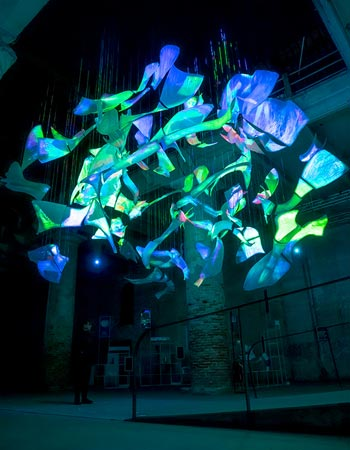

Obras y conceptos clave
- Machine Hallucinations
- Melting Memories
- Infinity Room
- Data Sculpture
- Arquitectura de datos
- Estética algorítmica

El trabajo de Refik Anadol se basa en la recopilación y procesamiento de datos provenientes de diversas fuentes, como archivos visuales, sonidos, movimientos urbanos o registros climáticos. Estos datos son analizados mediante algoritmos de inteligencia artificial que identifican patrones y generan nuevas visualizaciones. A partir de este proceso, el artista construye narrativas visuales que evolucionan en tiempo real o a través de simulaciones complejas. El resultado son obras que no son estáticas, sino sistemas vivos que cambian continuamente, ofreciendo múltiples interpretaciones según la interacción del espectador y el contexto.
